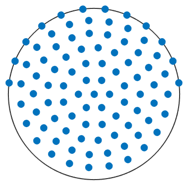

represents a grid of nodes on the sphere
| On this page ... |
| Class Description |
| Defining a S2Grid |
| Plots |
| Complete Function list |
The class S2Grid is used in MTEX to store the set of specimen directions organized in a pole figure. Of central importance is also the plotting method of this class since it is used by almost all other plotting methods in MTEX to perform spherical plots.
There are various ways to define a S2Grid. Next you find some exaples. For a detailed description of possible specifications look for the documentation of the copnstructor S2Grid.
% equidistributions S2G = equispacedS2Grid('points',100,'antipodal'); % specified by number of points S2G = equispacedS2Grid('RESOLUTION',5*degree,'antipodal'); % specified by resolution % regular grids S2G = regularS2Grid('points',[72,19]); % specified by number of theta and rho steps S2G = regularS2Grid('theta',linspace(0,2*pi,72),... 'rho',linspace(0,pi/2,19)); % explicitely determine theta and rho values % restrictes grids S2G = equispacedS2Grid('points',100,'MAXTHETA',75*degree); % specifiy maximum theta angle
plot(equispacedS2Grid('points',100,'antipodal')) % plot grid of nodes
| S2Grid | Syntax |
| copy | certain condition from grid |
| delete | elilinates points from grid |
| display | standard output |
| find | return index of all points in a epsilon neighborhood of a vector |
| getdata | return index of all points in a epsilon neighborhood of a vector |
| polar | coordinates of S2Grid |
| refine | S2Grid |
| subGrid | |
| subsasgn | overloads subsasgn |
| subsref | overloads subsref |
| DocHelp 0.1 beta |